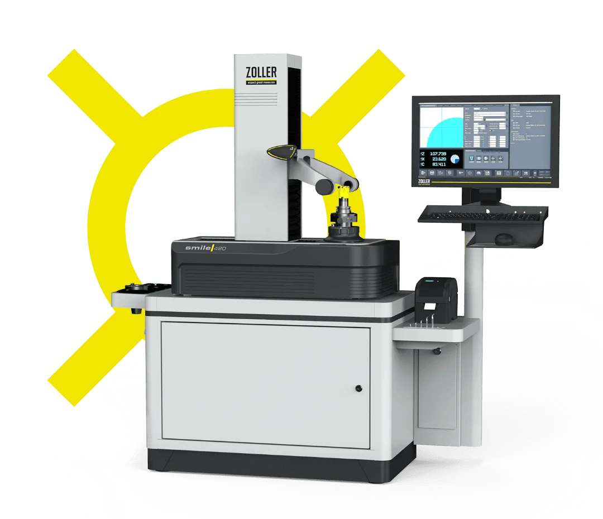
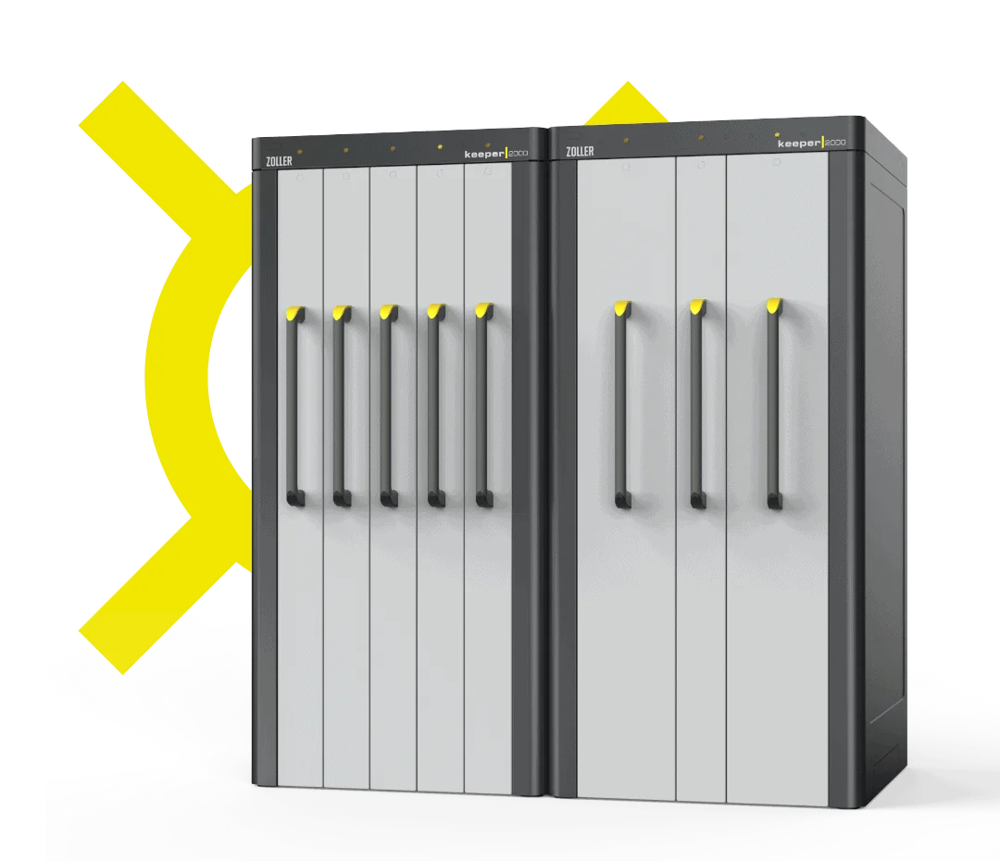
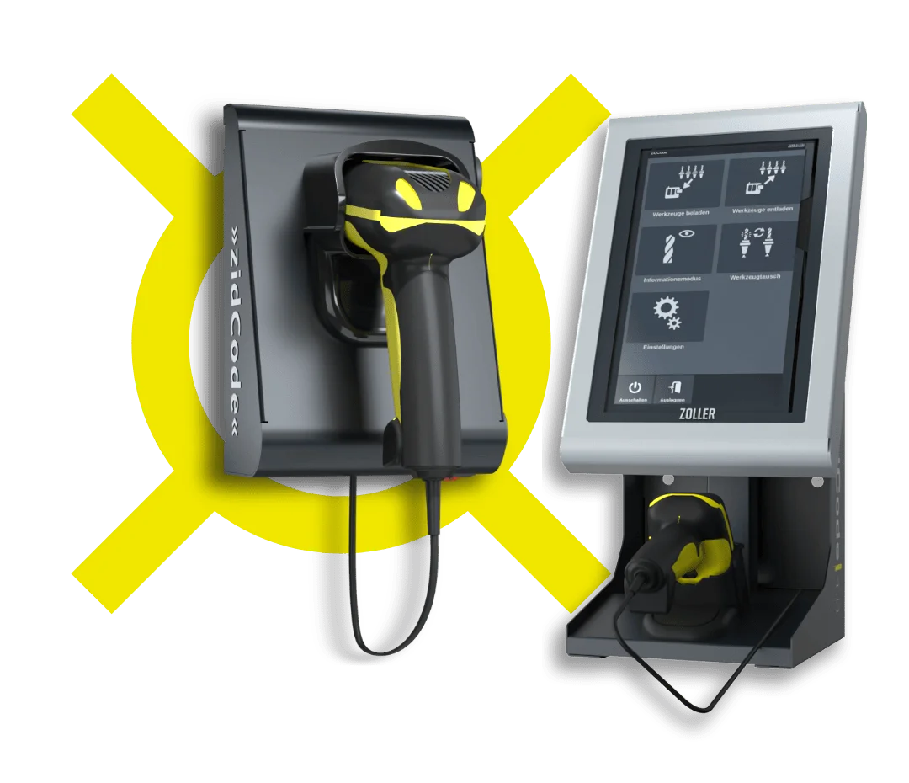
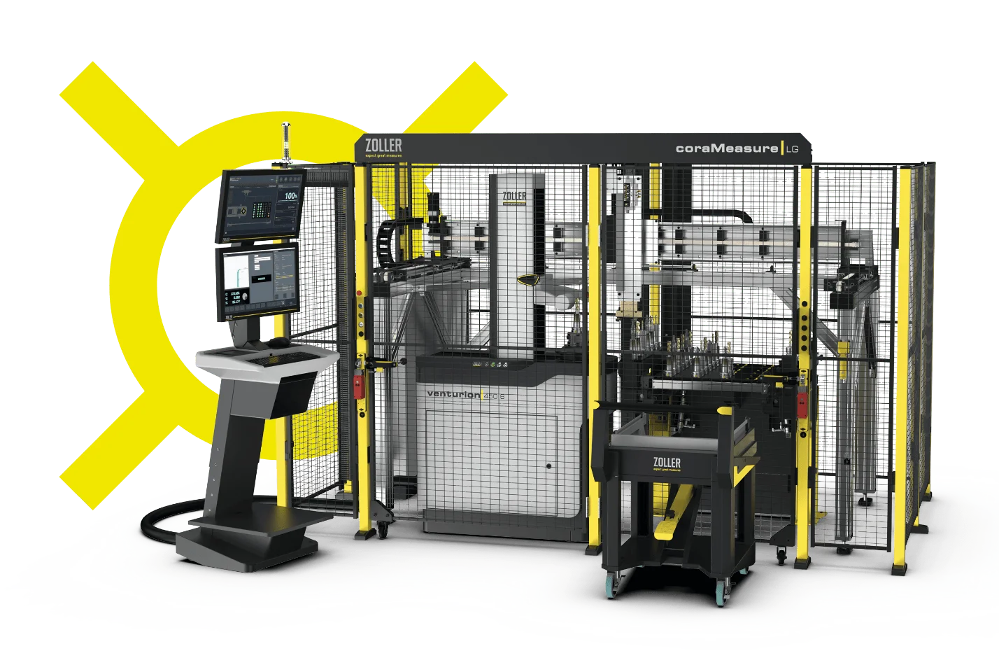
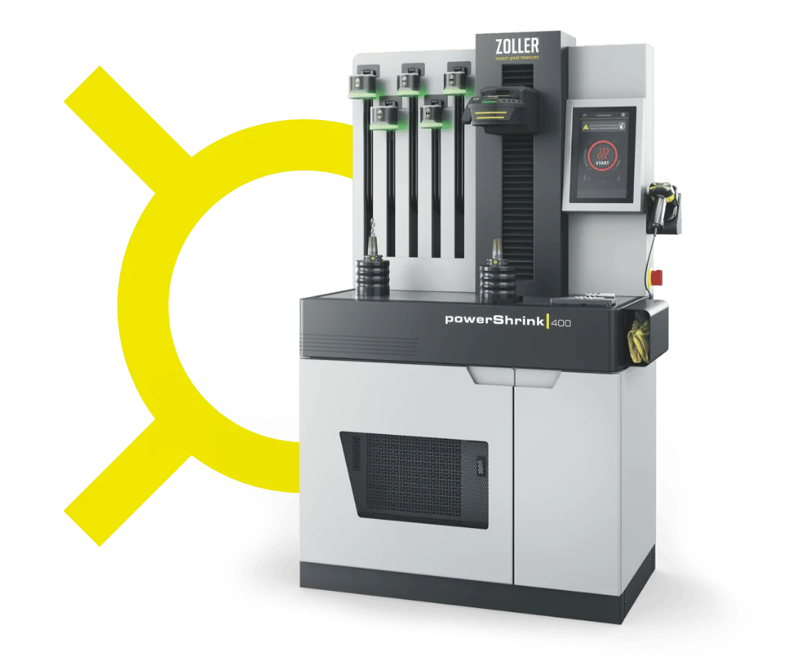

Übersicht von ZOLLER: Unser Expertenwissen
Wir unterstützen Ihre Arbeit
Mit unseren Produkten, unseren Maschinen und unserer Software, helfen wir Ihnen, Ihre Prozesse zu beschleunigen, weniger Ausschuss zu produzieren.
Wir entwickeln Lösungen passgenau für Ihre Herausforderungen. Erfahren Sie hier mehr über die Möglichkeiten, die unsere Software und unsere Geräte Ihnen eröffnen.
Einstellen & Messen
Mit Werkzeugvoreinstellung Kosten sparen und Sicherheit steigern
Um Teile präzise zu fertigen benötigen moderne CNC-Werkzeugmaschinen exakte Werkzeuggeometriedaten. Mit dem Werkzeugvoreinstellgerät ermittlen Sie die Werkzeugdaten außerhalb der Maschine und sparen so eine Menge Rüstzeit. Mit dem Einsetzen des Werkzeugs lesen Sie sofort die Werkzeugdaten aus dem Werkzeugvoreinstellgerät ein. Die Datenübertragung an die Maschine erfolgt elektronisch und damit völlig fehlerfrei, da Tippfehler und Übertragungsfehler ausgeschlossen sind.
Erfahren Sie mehr zu Einstell- und Messgeräten zur Werkzeugvoreinstellung

Toolmanagement
Gute Gründe, messbar wirtschaftlicher zu produzieren
- Rüstzeiten reduzieren: Das richtige Werkzeug ist immer zur richtigen Zeit am richtigen Ort. Die steuerungsgerechte Datenausgabe vermeidet Eingabefehler an der Maschine und daraus resultierende Kosten.
- Finden statt suchen: Sie wissen immer, welche Werkzeuge für welche Maschinen zur Verfügung stehen und wo sich
diese befinden. - Besser organisieren: Geplante Abläufe mit kalkulierbaren Stückzeiten und einer effizienten Kontrolle sorgen für eine effiziente Prozessführung und damit für kurze Reaktionszeiten. Autarke Fertigungseinheiten können integriert und organisiert werden.
- Maschinenstillstand vermeiden: Alle Werkzeuge sind immer verfügbar, 24 Stunden am Tag. Durch korrekte Werkzeuge auf den Maschinen werden Kollisionen verhindert, Werkzeugbruch vermieden.
- Qualität garantieren: Eine hohe Systemverfügbarkeit und transparente, stabile Fertigungsprozesse garantieren höchste Qualität.
- Lagerkosten sparen: Sie sehen, welche Werkzeuge wie oft genutzt werden, und bestellen nur, was tatsächlich benötigt wird.
- Werkzeugpotenzial ausschöpfen: Optimale Schnittgeschwindigkeiten und Vorschübe erhöhen die Standzeiten.
- Produktivität steigern: Ein optimierter Werkzeugumlauf sorgt für kurze Durchlaufzeiten und ausgelastete Maschinen, die Produktivität steigt, Herstellkosten sinken.
Wirtschaftliche Werkzeugverwaltung
Effiziente Lagerverwaltung und ein Fertigungsdatenmanagement

Datentransfer
Sicherer und schneller Datentransfer
Der Datenaustausch zwischen den einzelnen Produktionselementen ist für die industrielle Fertigung der Gegenwart unerlässlich. Mit den Softwarelösungen von ZOLLER ist die prozesssichere, schnelle Übertragung von Werkzeugdaten jederzeit gewährleistet – völlig unabhängig von Hersteller und Plattform.
Übermittlung von Werkzeugdaten
Perfektes Werkzeugwesen und Fertigungsorganisation

Prüfen & Messen
Messmaschinen sorgen für präzise Fertigung
Damit Werkzeuge genau das tun, wofür sie geplant und konstruiert wurden, müssen sie selbst präzise gefertigt sein. Mit unseren Universal-Messmaschinen lassen sich Werkzeuge auf den Mikrometer genau messen und prüfen, ob sie den Anforderungen entsprechen.

Automation
Automationslösung für die Werkzeugvermessung
Egal ob in der Werkzeugschleiferei oder beim Vorbereiten, Bereitstellen und Einrichten der Werkzeuge – die Automatisierung von täglich anfallenden Arbeiten wird die Antwort auf diese Herausforderung sein. Für jede Aufgabenstellung liefert ZOLLER die richtige Lösung zum automatisierten Werkzeughandling. Je nach Anforderung kann die Lösung in einem geschlossenen System mit zusätzlichen Modulen, einem komplexen Automatisierungskonzept oder einer kollaborativen Roboterunterstützung im Werkzeugraum liegen.
Alles zur modularen Automatisierung für Zerspanungswerkzeuge

Schrumpftechnik
Kurze Rüstzeiten durch den Einsatz eines Schrumpfgeräts
Für viele Bohr- und Fräswerkzeuge ist das Werkzeugschrumpfen die schnellste und zugleich auch präziseste Methode, um das Werkzeug einzuspannen. Mit einer entsprechenden Schrumpfstation lassen sich die notwendigen Arbeitsschritte leicht durchführen; eine Schrumpfmaschine kann diese noch weitgehend automatisieren und zugleich durch entsprechende Messungen die Prozesssicherheit garantieren.

Wuchttechnik
Schleifscheiben und Werkzeuge auswuchten? Wichtig und einfach!
Für moderne Zerspanungsmaschinen sind feingewuchtete Werkzeuge enorm wichtig. Unwuchten in Schleifscheiben, in ihrem Werkzeug und in Werkzeugsystemen sorgen für Verschleiß oder sogar Schäden an Spindel und Motoren – nicht zuletzt aber auch für Ausschuss bei den Werkstücken. Regelmäßiges Auswuchten verhindert Stillstand, sichert die Qualität und reduziert insgesamt Ihre Kosten.
Unser Auswuchtsystem erhöht die Werkzeugstandzeiten
Mehr Laufruhe und Zerspanleistung durch ausgewuchtete Schleifscheiben

Standzeiten Ihrer Werkzeuge optimieren
Je größer die Standzeit eines Zerspanungswerkzeugs, desto geringer sind die Kosten für dieses Werkzeug, desto effektiver kann es arbeiten. Wenn Sie die wichtigsten Faktoren kennen, die die Standzeit beeinflussen, ist es leichter, diese auch zu optimieren.
Wie Sie die Standzeit Ihres Werkzeug kontrollieren und optimieren können
Rüstzeit optimieren –
wie und warum?
Fast keine Maschine, keine Anlage stellt heutzutage nur ein Produkt her – in der Regel werden sie je nach Bedarf für unterschiedliche Produkte umgestellt. Dadurch entstehen Rüstzeiten, in denen die Maschine in der Regel nichts produziert.